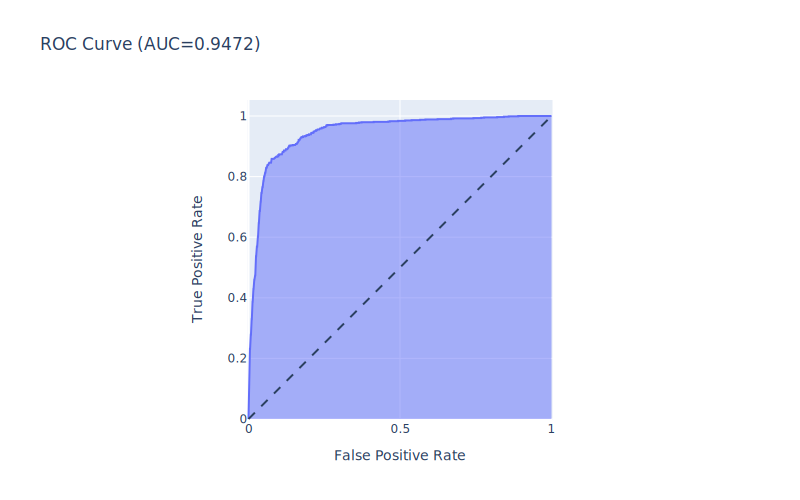

Support Vector Machine
Contents
Support Vector Machine#
Support vector machine or SVM is another one of the most widely used algorithm for classification.
# Import necessary packages
import pandas as pd
import numpy as np
import joblib
from sklearn.model_selection import train_test_split
from sklearn.svm import SVC
from sklearn.model_selection import GridSearchCV
from sklearn.metrics import roc_auc_score, roc_curve, auc
from sklearn.metrics import ConfusionMatrixDisplay
import plotly.express as px
import plotly.io as pio
svg_renderer = pio.renderers["svg"]
svg_renderer.width = 800
svg_renderer.height = 500
pio.renderers.default = "svg"
Model without oversample data#
# Load the data
df = pd.read_csv('./../../data/engineered_data.csv')
# Drop the index column
df.drop('Unnamed: 0', axis=1, inplace=True)
Before modelinng the data, it is necessary to split the data into training and testing set.
# Split the data into train and test sets
X_train, X_test, y_train, y_test = train_test_split(df.drop('state', axis=1), df['state'], test_size=0.2, random_state=42)
Model Building#
# Declare the SVM model without 'poly' kernel
svm_clf = SVC(probability=True, class_weight='balanced')
# Declare the grid paramters to be searched
svm_params = dict(
C = np.logspace(-4, 0, num=5),
kernel = ['linear', 'rbf', 'sigmoid']
)
# For training SVM without 'poly' kernel
# Declare the gridsearch object
grid_search = GridSearchCV(svm_clf, svm_params, scoring='roc_auc', n_jobs=7, refit=True, cv=10, verbose=3)
# Fit the model
grid_result = grid_search.fit(X_train, y_train)
Fitting 10 folds for each of 15 candidates, totalling 150 fits
[CV 4/10] END ..........C=0.0001, kernel=linear;, score=0.857 total time= 53.0s
[CV 6/10] END ..........C=0.0001, kernel=linear;, score=0.863 total time= 53.8s
[CV 2/10] END ..........C=0.0001, kernel=linear;, score=0.822 total time= 54.1s
[CV 3/10] END ..........C=0.0001, kernel=linear;, score=0.852 total time= 54.4s
[CV 1/10] END ..........C=0.0001, kernel=linear;, score=0.858 total time= 54.6s
[CV 5/10] END ..........C=0.0001, kernel=linear;, score=0.863 total time= 54.8s
[CV 7/10] END ..........C=0.0001, kernel=linear;, score=0.856 total time= 55.4s
[CV 10/10] END .........C=0.0001, kernel=linear;, score=0.852 total time= 43.1s
[CV 8/10] END ..........C=0.0001, kernel=linear;, score=0.848 total time= 44.1s
[CV 9/10] END ..........C=0.0001, kernel=linear;, score=0.839 total time= 43.7s
[CV 2/10] END .............C=0.0001, kernel=rbf;, score=0.513 total time= 58.6s
[CV 1/10] END .............C=0.0001, kernel=rbf;, score=0.502 total time= 60.0s
[CV 3/10] END .............C=0.0001, kernel=rbf;, score=0.533 total time= 59.6s
[CV 4/10] END .............C=0.0001, kernel=rbf;, score=0.514 total time= 59.1s
[CV 6/10] END .............C=0.0001, kernel=rbf;, score=0.527 total time= 56.9s
[CV 5/10] END .............C=0.0001, kernel=rbf;, score=0.525 total time= 58.3s
[CV 7/10] END .............C=0.0001, kernel=rbf;, score=0.520 total time= 59.3s
[CV 1/10] END .........C=0.0001, kernel=sigmoid;, score=0.520 total time= 53.4s
[CV 8/10] END .............C=0.0001, kernel=rbf;, score=0.513 total time= 55.2s
[CV 10/10] END ............C=0.0001, kernel=rbf;, score=0.534 total time= 57.3s
[CV 9/10] END .............C=0.0001, kernel=rbf;, score=0.535 total time= 59.7s
[CV 2/10] END .........C=0.0001, kernel=sigmoid;, score=0.481 total time= 56.1s
[CV 3/10] END .........C=0.0001, kernel=sigmoid;, score=0.555 total time= 56.8s
[CV 4/10] END .........C=0.0001, kernel=sigmoid;, score=0.524 total time= 57.5s
[CV 6/10] END .........C=0.0001, kernel=sigmoid;, score=0.485 total time= 55.8s
[CV 5/10] END .........C=0.0001, kernel=sigmoid;, score=0.517 total time= 56.3s
[CV 7/10] END .........C=0.0001, kernel=sigmoid;, score=0.521 total time= 57.1s
[CV 8/10] END .........C=0.0001, kernel=sigmoid;, score=0.517 total time= 56.1s
[CV 9/10] END .........C=0.0001, kernel=sigmoid;, score=0.510 total time= 58.0s
[CV 10/10] END ........C=0.0001, kernel=sigmoid;, score=0.511 total time= 57.1s
[CV 1/10] END ...........C=0.001, kernel=linear;, score=0.917 total time= 58.7s
[CV 2/10] END ...........C=0.001, kernel=linear;, score=0.908 total time= 58.2s
[CV 3/10] END ...........C=0.001, kernel=linear;, score=0.920 total time= 60.0s
[CV 4/10] END ...........C=0.001, kernel=linear;, score=0.923 total time= 58.4s
[CV 5/10] END ...........C=0.001, kernel=linear;, score=0.927 total time= 59.9s
[CV 6/10] END ...........C=0.001, kernel=linear;, score=0.931 total time= 58.2s
[CV 7/10] END ...........C=0.001, kernel=linear;, score=0.915 total time= 58.6s
[CV 8/10] END ...........C=0.001, kernel=linear;, score=0.906 total time= 59.9s
[CV 9/10] END ...........C=0.001, kernel=linear;, score=0.916 total time= 57.5s
[CV 10/10] END ..........C=0.001, kernel=linear;, score=0.929 total time= 58.4s
[CV 1/10] END ..............C=0.001, kernel=rbf;, score=0.502 total time= 1.0min
[CV 2/10] END ..............C=0.001, kernel=rbf;, score=0.513 total time= 1.1min
[CV 3/10] END ..............C=0.001, kernel=rbf;, score=0.533 total time= 59.5s
[CV 4/10] END ..............C=0.001, kernel=rbf;, score=0.514 total time= 59.5s
[CV 5/10] END ..............C=0.001, kernel=rbf;, score=0.525 total time= 1.0min
[CV 6/10] END ..............C=0.001, kernel=rbf;, score=0.527 total time= 59.8s
[CV 7/10] END ..............C=0.001, kernel=rbf;, score=0.520 total time= 1.0min
[CV 8/10] END ..............C=0.001, kernel=rbf;, score=0.513 total time= 1.0min
[CV 9/10] END ..............C=0.001, kernel=rbf;, score=0.535 total time= 1.0min
[CV 1/10] END ..........C=0.001, kernel=sigmoid;, score=0.520 total time= 59.0s
[CV 10/10] END .............C=0.001, kernel=rbf;, score=0.534 total time= 1.1min
[CV 2/10] END ..........C=0.001, kernel=sigmoid;, score=0.481 total time= 58.7s
[CV 3/10] END ..........C=0.001, kernel=sigmoid;, score=0.555 total time= 59.8s
[CV 4/10] END ..........C=0.001, kernel=sigmoid;, score=0.524 total time= 59.2s
[CV 5/10] END ..........C=0.001, kernel=sigmoid;, score=0.517 total time= 59.7s
[CV 6/10] END ..........C=0.001, kernel=sigmoid;, score=0.485 total time= 58.5s
[CV 7/10] END ..........C=0.001, kernel=sigmoid;, score=0.521 total time= 55.3s
[CV 8/10] END ..........C=0.001, kernel=sigmoid;, score=0.517 total time= 55.8s
[CV 9/10] END ..........C=0.001, kernel=sigmoid;, score=0.510 total time= 56.4s
[CV 10/10] END .........C=0.001, kernel=sigmoid;, score=0.511 total time= 54.9s
[CV 1/10] END ............C=0.01, kernel=linear;, score=0.938 total time= 2.3min
[CV 2/10] END ............C=0.01, kernel=linear;, score=0.929 total time= 2.3min
[CV 3/10] END ............C=0.01, kernel=linear;, score=0.940 total time= 2.3min
[CV 4/10] END ............C=0.01, kernel=linear;, score=0.938 total time= 2.3min
[CV 5/10] END ............C=0.01, kernel=linear;, score=0.941 total time= 2.3min
[CV 6/10] END ............C=0.01, kernel=linear;, score=0.945 total time= 2.3min
[CV 7/10] END ............C=0.01, kernel=linear;, score=0.930 total time= 2.3min
[CV 1/10] END ...............C=0.01, kernel=rbf;, score=0.502 total time= 54.8s
[CV 2/10] END ...............C=0.01, kernel=rbf;, score=0.514 total time= 54.4s
[CV 3/10] END ...............C=0.01, kernel=rbf;, score=0.533 total time= 57.2s
[CV 4/10] END ...............C=0.01, kernel=rbf;, score=0.514 total time= 56.5s
[CV 8/10] END ............C=0.01, kernel=linear;, score=0.931 total time= 2.3min
[CV 9/10] END ............C=0.01, kernel=linear;, score=0.935 total time= 2.2min
[CV 10/10] END ...........C=0.01, kernel=linear;, score=0.951 total time= 2.3min
[CV 5/10] END ...............C=0.01, kernel=rbf;, score=0.525 total time= 56.4s
[CV 6/10] END ...............C=0.01, kernel=rbf;, score=0.527 total time= 56.2s
[CV 7/10] END ...............C=0.01, kernel=rbf;, score=0.520 total time= 57.0s
[CV 8/10] END ...............C=0.01, kernel=rbf;, score=0.513 total time= 58.3s
[CV 9/10] END ...............C=0.01, kernel=rbf;, score=0.535 total time= 1.1min
[CV 10/10] END ..............C=0.01, kernel=rbf;, score=0.533 total time= 1.1min
[CV 1/10] END ...........C=0.01, kernel=sigmoid;, score=0.530 total time= 1.0min
[CV 2/10] END ...........C=0.01, kernel=sigmoid;, score=0.508 total time= 1.0min
[CV 3/10] END ...........C=0.01, kernel=sigmoid;, score=0.503 total time= 1.0min
[CV 4/10] END ...........C=0.01, kernel=sigmoid;, score=0.493 total time= 1.0min
[CV 5/10] END ...........C=0.01, kernel=sigmoid;, score=0.521 total time= 59.5s
[CV 7/10] END ...........C=0.01, kernel=sigmoid;, score=0.513 total time= 57.4s
[CV 6/10] END ...........C=0.01, kernel=sigmoid;, score=0.494 total time= 58.0s
[CV 9/10] END ...........C=0.01, kernel=sigmoid;, score=0.468 total time= 55.7s
[CV 8/10] END ...........C=0.01, kernel=sigmoid;, score=0.490 total time= 57.9s
[CV 10/10] END ..........C=0.01, kernel=sigmoid;, score=0.518 total time= 56.6s
[CV 2/10] END .............C=0.1, kernel=linear;, score=0.939 total time= 9.9min
[CV 1/10] END .............C=0.1, kernel=linear;, score=0.949 total time=10.1min
[CV 3/10] END .............C=0.1, kernel=linear;, score=0.951 total time=10.0min
[CV 5/10] END .............C=0.1, kernel=linear;, score=0.952 total time=10.0min
[CV 6/10] END .............C=0.1, kernel=linear;, score=0.955 total time=10.0min
[CV 4/10] END .............C=0.1, kernel=linear;, score=0.946 total time=10.3min
[CV 7/10] END .............C=0.1, kernel=linear;, score=0.939 total time=10.5min
[CV 1/10] END ................C=0.1, kernel=rbf;, score=0.516 total time= 51.0s
[CV 2/10] END ................C=0.1, kernel=rbf;, score=0.531 total time= 52.0s
[CV 3/10] END ................C=0.1, kernel=rbf;, score=0.545 total time= 52.3s
[CV 4/10] END ................C=0.1, kernel=rbf;, score=0.529 total time= 52.7s
[CV 5/10] END ................C=0.1, kernel=rbf;, score=0.540 total time= 54.7s
[CV 6/10] END ................C=0.1, kernel=rbf;, score=0.538 total time= 56.0s
[CV 7/10] END ................C=0.1, kernel=rbf;, score=0.540 total time= 54.8s
[CV 8/10] END ................C=0.1, kernel=rbf;, score=0.543 total time= 53.5s
[CV 1/10] END ............C=0.1, kernel=sigmoid;, score=0.514 total time= 39.8s
[CV 9/10] END ................C=0.1, kernel=rbf;, score=0.555 total time= 55.7s
[CV 10/10] END ...............C=0.1, kernel=rbf;, score=0.548 total time= 55.7s
[CV 2/10] END ............C=0.1, kernel=sigmoid;, score=0.501 total time= 41.0s
[CV 3/10] END ............C=0.1, kernel=sigmoid;, score=0.487 total time= 39.3s
[CV 4/10] END ............C=0.1, kernel=sigmoid;, score=0.509 total time= 41.3s
[CV 5/10] END ............C=0.1, kernel=sigmoid;, score=0.523 total time= 41.0s
[CV 6/10] END ............C=0.1, kernel=sigmoid;, score=0.487 total time= 42.7s
[CV 7/10] END ............C=0.1, kernel=sigmoid;, score=0.505 total time= 42.5s
[CV 8/10] END ............C=0.1, kernel=sigmoid;, score=0.498 total time= 38.9s
[CV 9/10] END ............C=0.1, kernel=sigmoid;, score=0.468 total time= 40.6s
[CV 10/10] END ...........C=0.1, kernel=sigmoid;, score=0.519 total time= 39.9s
[CV 9/10] END .............C=0.1, kernel=linear;, score=0.942 total time=10.0min
[CV 8/10] END .............C=0.1, kernel=linear;, score=0.943 total time=10.7min
[CV 10/10] END ............C=0.1, kernel=linear;, score=0.959 total time=10.2min
[CV 3/10] END .............C=1.0, kernel=linear;, score=0.953 total time=94.5min
[CV 2/10] END .............C=1.0, kernel=linear;, score=0.941 total time=95.4min
[CV 4/10] END .............C=1.0, kernel=linear;, score=0.947 total time=95.8min
[CV 6/10] END .............C=1.0, kernel=linear;, score=0.958 total time=94.4min
[CV 1/10] END ............C=1.0, kernel=linear;, score=0.951 total time=101.1min
[CV 1/10] END ................C=1.0, kernel=rbf;, score=0.583 total time= 1.1min
[CV 2/10] END ................C=1.0, kernel=rbf;, score=0.594 total time= 1.1min
[CV 3/10] END ................C=1.0, kernel=rbf;, score=0.614 total time= 1.1min
[CV 4/10] END ................C=1.0, kernel=rbf;, score=0.618 total time= 1.1min
[CV 5/10] END ................C=1.0, kernel=rbf;, score=0.634 total time= 1.1min
[CV 6/10] END ................C=1.0, kernel=rbf;, score=0.627 total time= 1.1min
[CV 7/10] END ................C=1.0, kernel=rbf;, score=0.618 total time= 1.2min
[CV 8/10] END ................C=1.0, kernel=rbf;, score=0.632 total time= 1.2min
[CV 9/10] END ................C=1.0, kernel=rbf;, score=0.624 total time= 1.2min
[CV 1/10] END ............C=1.0, kernel=sigmoid;, score=0.514 total time= 46.5s
[CV 5/10] END ............C=1.0, kernel=linear;, score=0.956 total time=101.4min
[CV 10/10] END ...............C=1.0, kernel=rbf;, score=0.618 total time= 1.2min
[CV 2/10] END ............C=1.0, kernel=sigmoid;, score=0.501 total time= 46.9s
[CV 4/10] END ............C=1.0, kernel=sigmoid;, score=0.509 total time= 46.8s
[CV 3/10] END ............C=1.0, kernel=sigmoid;, score=0.487 total time= 48.1s
[CV 7/10] END ............C=1.0, kernel=linear;, score=0.943 total time=101.8min
[CV 5/10] END ............C=1.0, kernel=sigmoid;, score=0.523 total time= 50.7s
[CV 7/10] END ............C=1.0, kernel=sigmoid;, score=0.504 total time= 47.7s
[CV 6/10] END ............C=1.0, kernel=sigmoid;, score=0.487 total time= 49.3s
[CV 8/10] END ............C=1.0, kernel=sigmoid;, score=0.498 total time= 45.6s
[CV 9/10] END ............C=1.0, kernel=sigmoid;, score=0.468 total time= 41.2s
[CV 10/10] END ...........C=1.0, kernel=sigmoid;, score=0.518 total time= 36.8s
[CV 9/10] END .............C=1.0, kernel=linear;, score=0.944 total time=63.4min
[CV 8/10] END .............C=1.0, kernel=linear;, score=0.948 total time=64.4min
[CV 10/10] END ............C=1.0, kernel=linear;, score=0.961 total time=65.8min
# Declare the SVM model with 'poly' kernel
svm_clf_poly = SVC(probability=True, class_weight='balanced', kernel='poly')
# Declare the grid paramters to be searched
svm_params_poly = dict(
C = np.logspace(-4, 0, num=5),
degree = [2, 3, 4]
)
# For training SVM without 'poly' kernel
# Declare the gridsearch object
grid_search_poly = GridSearchCV(svm_clf_poly, svm_params_poly, scoring='roc_auc', n_jobs=7, refit=True, cv=10, verbose=5)
# Fit the model
grid_result_poly = grid_search_poly.fit(X_train, y_train)
Fitting 10 folds for each of 15 candidates, totalling 150 fits
[CV 7/10] END ...............C=0.0001, degree=2;, score=0.496 total time= 2.3min
[CV 5/10] END ...............C=0.0001, degree=2;, score=0.520 total time= 2.4min
[CV 6/10] END ...............C=0.0001, degree=2;, score=0.508 total time= 2.4min
[CV 3/10] END ...............C=0.0001, degree=2;, score=0.519 total time= 2.4min
[CV 4/10] END ...............C=0.0001, degree=2;, score=0.497 total time= 2.4min
[CV 2/10] END ...............C=0.0001, degree=2;, score=0.488 total time= 2.4min
[CV 1/10] END ...............C=0.0001, degree=2;, score=0.505 total time= 2.4min
[CV 9/10] END ...............C=0.0001, degree=2;, score=0.525 total time= 2.3min
[CV 8/10] END ...............C=0.0001, degree=2;, score=0.479 total time= 2.3min
[CV 1/10] END ...............C=0.0001, degree=3;, score=0.496 total time= 2.3min
[CV 10/10] END ..............C=0.0001, degree=2;, score=0.472 total time= 2.3min
[CV 4/10] END ...............C=0.0001, degree=3;, score=0.503 total time= 2.3min
[CV 3/10] END ...............C=0.0001, degree=3;, score=0.514 total time= 2.3min
[CV 2/10] END ...............C=0.0001, degree=3;, score=0.497 total time= 2.4min
[CV 5/10] END ...............C=0.0001, degree=3;, score=0.495 total time= 2.2min
[CV 6/10] END ...............C=0.0001, degree=3;, score=0.510 total time= 2.2min
[CV 8/10] END ...............C=0.0001, degree=3;, score=0.512 total time= 2.2min
[CV 10/10] END ..............C=0.0001, degree=3;, score=0.518 total time= 2.1min
[CV 1/10] END ...............C=0.0001, degree=4;, score=0.475 total time= 2.2min
[CV 9/10] END ...............C=0.0001, degree=3;, score=0.519 total time= 2.2min
[CV 7/10] END ...............C=0.0001, degree=3;, score=0.540 total time= 2.2min
[CV 3/10] END ...............C=0.0001, degree=4;, score=0.513 total time= 2.1min
[CV 2/10] END ...............C=0.0001, degree=4;, score=0.463 total time= 2.1min
[CV 5/10] END ...............C=0.0001, degree=4;, score=0.491 total time= 2.1min
[CV 4/10] END ...............C=0.0001, degree=4;, score=0.498 total time= 2.2min
[CV 7/10] END ...............C=0.0001, degree=4;, score=0.512 total time= 2.1min
[CV 8/10] END ...............C=0.0001, degree=4;, score=0.484 total time= 2.1min
[CV 6/10] END ...............C=0.0001, degree=4;, score=0.475 total time= 2.1min
[CV 9/10] END ...............C=0.0001, degree=4;, score=0.505 total time= 2.1min
[CV 10/10] END ..............C=0.0001, degree=4;, score=0.500 total time= 2.1min
[CV 1/10] END ................C=0.001, degree=2;, score=0.499 total time= 2.1min
[CV 2/10] END ................C=0.001, degree=2;, score=0.485 total time= 2.1min
[CV 4/10] END ................C=0.001, degree=2;, score=0.492 total time= 2.1min
[CV 5/10] END ................C=0.001, degree=2;, score=0.521 total time= 2.1min
[CV 3/10] END ................C=0.001, degree=2;, score=0.527 total time= 2.1min
[CV 7/10] END ................C=0.001, degree=2;, score=0.513 total time= 2.3min
[CV 6/10] END ................C=0.001, degree=2;, score=0.504 total time= 2.3min
[CV 9/10] END ................C=0.001, degree=2;, score=0.507 total time= 2.3min
[CV 8/10] END ................C=0.001, degree=2;, score=0.500 total time= 2.3min
[CV 10/10] END ...............C=0.001, degree=2;, score=0.481 total time= 2.3min
[CV 1/10] END ................C=0.001, degree=3;, score=0.495 total time= 2.3min
[CV 2/10] END ................C=0.001, degree=3;, score=0.479 total time= 2.4min
[CV 3/10] END ................C=0.001, degree=3;, score=0.505 total time= 2.3min
[CV 5/10] END ................C=0.001, degree=3;, score=0.480 total time= 2.3min
[CV 4/10] END ................C=0.001, degree=3;, score=0.498 total time= 2.4min
[CV 6/10] END ................C=0.001, degree=3;, score=0.509 total time= 2.3min
[CV 7/10] END ................C=0.001, degree=3;, score=0.532 total time= 2.3min
[CV 8/10] END ................C=0.001, degree=3;, score=0.509 total time= 2.4min
[CV 9/10] END ................C=0.001, degree=3;, score=0.520 total time= 2.3min
[CV 10/10] END ...............C=0.001, degree=3;, score=0.517 total time= 2.4min
[CV 1/10] END ................C=0.001, degree=4;, score=0.481 total time= 2.4min
[CV 2/10] END ................C=0.001, degree=4;, score=0.482 total time= 2.3min
[CV 4/10] END ................C=0.001, degree=4;, score=0.500 total time= 2.3min
[CV 3/10] END ................C=0.001, degree=4;, score=0.510 total time= 2.4min
[CV 5/10] END ................C=0.001, degree=4;, score=0.487 total time= 2.4min
[CV 6/10] END ................C=0.001, degree=4;, score=0.479 total time= 2.4min
[CV 7/10] END ................C=0.001, degree=4;, score=0.505 total time= 2.4min
[CV 9/10] END ................C=0.001, degree=4;, score=0.506 total time= 2.4min
[CV 10/10] END ...............C=0.001, degree=4;, score=0.513 total time= 2.4min
[CV 1/10] END .................C=0.01, degree=2;, score=0.500 total time= 2.3min
[CV 8/10] END ................C=0.001, degree=4;, score=0.501 total time= 2.4min
[CV 2/10] END .................C=0.01, degree=2;, score=0.479 total time= 2.4min
[CV 3/10] END .................C=0.01, degree=2;, score=0.524 total time= 2.4min
[CV 4/10] END .................C=0.01, degree=2;, score=0.499 total time= 2.3min
[CV 6/10] END .................C=0.01, degree=2;, score=0.504 total time= 2.2min
[CV 5/10] END .................C=0.01, degree=2;, score=0.510 total time= 2.2min
[CV 7/10] END .................C=0.01, degree=2;, score=0.522 total time= 2.2min
[CV 8/10] END .................C=0.01, degree=2;, score=0.517 total time= 2.2min
[CV 9/10] END .................C=0.01, degree=2;, score=0.505 total time= 2.2min
[CV 10/10] END ................C=0.01, degree=2;, score=0.483 total time= 2.2min
[CV 2/10] END .................C=0.01, degree=3;, score=0.505 total time= 2.2min
[CV 1/10] END .................C=0.01, degree=3;, score=0.533 total time= 2.2min
[CV 4/10] END .................C=0.01, degree=3;, score=0.540 total time= 2.2min
[CV 5/10] END .................C=0.01, degree=3;, score=0.512 total time= 2.2min
[CV 3/10] END .................C=0.01, degree=3;, score=0.528 total time= 2.3min
[CV 6/10] END .................C=0.01, degree=3;, score=0.533 total time= 2.2min
[CV 7/10] END .................C=0.01, degree=3;, score=0.554 total time= 2.2min
[CV 9/10] END .................C=0.01, degree=3;, score=0.543 total time= 2.1min
[CV 8/10] END .................C=0.01, degree=3;, score=0.529 total time= 2.2min
[CV 10/10] END ................C=0.01, degree=3;, score=0.535 total time= 2.2min
[CV 1/10] END .................C=0.01, degree=4;, score=0.537 total time= 2.3min
[CV 2/10] END .................C=0.01, degree=4;, score=0.530 total time= 2.3min
[CV 3/10] END .................C=0.01, degree=4;, score=0.558 total time= 2.2min
[CV 4/10] END .................C=0.01, degree=4;, score=0.546 total time= 2.3min
[CV 5/10] END .................C=0.01, degree=4;, score=0.553 total time= 2.2min
[CV 6/10] END .................C=0.01, degree=4;, score=0.536 total time= 2.3min
[CV 7/10] END .................C=0.01, degree=4;, score=0.561 total time= 2.3min
[CV 10/10] END ................C=0.01, degree=4;, score=0.561 total time= 2.2min
[CV 8/10] END .................C=0.01, degree=4;, score=0.541 total time= 2.3min
[CV 9/10] END .................C=0.01, degree=4;, score=0.562 total time= 2.3min
[CV 1/10] END ..................C=0.1, degree=2;, score=0.524 total time= 2.2min
[CV 2/10] END ..................C=0.1, degree=2;, score=0.500 total time= 2.2min
[CV 3/10] END ..................C=0.1, degree=2;, score=0.551 total time= 2.2min
[CV 4/10] END ..................C=0.1, degree=2;, score=0.517 total time= 2.3min
[CV 5/10] END ..................C=0.1, degree=2;, score=0.538 total time= 2.2min
[CV 7/10] END ..................C=0.1, degree=2;, score=0.552 total time= 2.2min
[CV 6/10] END ..................C=0.1, degree=2;, score=0.531 total time= 2.3min
[CV 8/10] END ..................C=0.1, degree=2;, score=0.545 total time= 2.2min
[CV 9/10] END ..................C=0.1, degree=2;, score=0.538 total time= 2.2min
[CV 10/10] END .................C=0.1, degree=2;, score=0.511 total time= 2.2min
[CV 2/10] END ..................C=0.1, degree=3;, score=0.686 total time= 2.3min
[CV 1/10] END ..................C=0.1, degree=3;, score=0.698 total time= 2.3min
[CV 3/10] END ..................C=0.1, degree=3;, score=0.705 total time= 2.3min
[CV 5/10] END ..................C=0.1, degree=3;, score=0.697 total time= 2.3min
[CV 4/10] END ..................C=0.1, degree=3;, score=0.707 total time= 2.3min
[CV 7/10] END ..................C=0.1, degree=3;, score=0.739 total time= 2.2min
[CV 6/10] END ..................C=0.1, degree=3;, score=0.712 total time= 2.2min
[CV 8/10] END ..................C=0.1, degree=3;, score=0.713 total time= 2.2min
[CV 9/10] END ..................C=0.1, degree=3;, score=0.719 total time= 2.2min
[CV 10/10] END .................C=0.1, degree=3;, score=0.706 total time= 2.2min
[CV 2/10] END ..................C=0.1, degree=4;, score=0.635 total time= 2.3min
[CV 1/10] END ..................C=0.1, degree=4;, score=0.673 total time= 2.5min
[CV 3/10] END ..................C=0.1, degree=4;, score=0.630 total time= 2.2min
[CV 4/10] END ..................C=0.1, degree=4;, score=0.630 total time= 2.4min
[CV 6/10] END ..................C=0.1, degree=4;, score=0.678 total time= 2.2min
[CV 5/10] END ..................C=0.1, degree=4;, score=0.661 total time= 2.3min
[CV 7/10] END ..................C=0.1, degree=4;, score=0.673 total time= 2.3min
[CV 8/10] END ..................C=0.1, degree=4;, score=0.632 total time= 2.3min
[CV 9/10] END ..................C=0.1, degree=4;, score=0.672 total time= 2.4min
[CV 1/10] END ..................C=1.0, degree=2;, score=0.652 total time= 2.1min
[CV 10/10] END .................C=0.1, degree=4;, score=0.671 total time= 2.3min
[CV 2/10] END ..................C=1.0, degree=2;, score=0.616 total time= 2.1min
[CV 3/10] END ..................C=1.0, degree=2;, score=0.637 total time= 2.1min
[CV 4/10] END ..................C=1.0, degree=2;, score=0.606 total time= 2.2min
[CV 5/10] END ..................C=1.0, degree=2;, score=0.640 total time= 2.1min
[CV 6/10] END ..................C=1.0, degree=2;, score=0.649 total time= 2.2min
[CV 7/10] END ..................C=1.0, degree=2;, score=0.678 total time= 2.2min
[CV 8/10] END ..................C=1.0, degree=2;, score=0.636 total time= 2.1min
[CV 9/10] END ..................C=1.0, degree=2;, score=0.643 total time= 2.1min
[CV 10/10] END .................C=1.0, degree=2;, score=0.641 total time= 2.2min
[CV 1/10] END ..................C=1.0, degree=3;, score=0.861 total time= 2.4min
[CV 2/10] END ..................C=1.0, degree=3;, score=0.856 total time= 2.3min
[CV 3/10] END ..................C=1.0, degree=3;, score=0.844 total time= 2.3min
[CV 4/10] END ..................C=1.0, degree=3;, score=0.836 total time= 2.3min
[CV 5/10] END ..................C=1.0, degree=3;, score=0.852 total time= 2.3min
[CV 6/10] END ..................C=1.0, degree=3;, score=0.853 total time= 2.3min
[CV 7/10] END ..................C=1.0, degree=3;, score=0.860 total time= 2.3min
[CV 8/10] END ..................C=1.0, degree=3;, score=0.854 total time= 2.3min
[CV 9/10] END ..................C=1.0, degree=3;, score=0.862 total time= 2.3min
[CV 10/10] END .................C=1.0, degree=3;, score=0.845 total time= 2.3min
[CV 2/10] END ..................C=1.0, degree=4;, score=0.673 total time= 2.5min
[CV 1/10] END ..................C=1.0, degree=4;, score=0.698 total time= 2.6min
[CV 3/10] END ..................C=1.0, degree=4;, score=0.665 total time= 2.6min
[CV 4/10] END ..................C=1.0, degree=4;, score=0.660 total time= 2.5min
[CV 6/10] END ..................C=1.0, degree=4;, score=0.715 total time= 2.6min
[CV 5/10] END ..................C=1.0, degree=4;, score=0.673 total time= 2.7min
[CV 7/10] END ..................C=1.0, degree=4;, score=0.703 total time= 2.5min
[CV 8/10] END ..................C=1.0, degree=4;, score=0.662 total time= 1.7min
[CV 10/10] END .................C=1.0, degree=4;, score=0.692 total time= 1.6min
[CV 9/10] END ..................C=1.0, degree=4;, score=0.689 total time= 1.8min
Inferencing#
# Get the best model parameters
print(f"Best score of {grid_result.best_score_} is achieved by using {grid_result.best_params_}")
print(f"Best score of {grid_result_poly.best_score_} is achieved by using {grid_result_poly.best_params_}")
Best score of 0.9582827048948805 is achieved by using {'C': 1.0, 'kernel': 'linear'}
Best score of 0.8522176297737245 is achieved by using {'C': 1.0, 'degree': 3}
# Predict on test data using the model
y_pred = grid_search.predict(X_test)
y_score = grid_search.predict_proba(X_test)[:, 1]
Evaluation#
# Find the ROC AUC score
print(f"Area under the ROC curve: {roc_auc_score(y_test, y_score)}")
Area under the ROC curve: 0.9472100846919147
# Calculate parameters for roc auc curve
fpr, tpr, thresholds = roc_curve(y_test, y_score)
# Plot the curve and area under the curve
fig = px.area(
x=fpr, y=tpr,
title=f'ROC Curve (AUC={auc(fpr, tpr):.4f})',
labels=dict(x='False Positive Rate', y='True Positive Rate')
)
fig.add_shape(
type='line', line=dict(dash='dash'),
x0=0, x1=1, y0=0, y1=1
)
fig.update_yaxes(scaleanchor="x", scaleratio=1)
fig.update_xaxes(constrain='domain')
fig.show()

An AUC score of 0.88 is quite remarkable and it suggest that model is quite good in predicting whether a project on Kickstarter will be succecssful or not.
# Create a ROC dataframe from the obtained FPR and TPR
roc_df = pd.DataFrame({
'fpr': fpr,
'tpr': tpr,
'threshold': thresholds
})
# Get the values of threshold for true positive rate between 0.79 and 0.81
roc_df[roc_df['tpr'].between(0.79, 0.81)]
| fpr | tpr | threshold | |
|---|---|---|---|
| 184 | 0.049618 | 0.793615 | 0.515917 |
| 185 | 0.050095 | 0.793615 | 0.513528 |
| 186 | 0.050095 | 0.795895 | 0.511968 |
| 187 | 0.051050 | 0.795895 | 0.511324 |
| 188 | 0.051050 | 0.799316 | 0.510062 |
| 189 | 0.051527 | 0.799316 | 0.508657 |
| 190 | 0.051527 | 0.800456 | 0.508389 |
| 191 | 0.052481 | 0.800456 | 0.507243 |
| 192 | 0.052481 | 0.801596 | 0.506943 |
From the above table, it is safe to assume the threshold value of 0.5 for classifying the observations.
# Plot the confusion matrix
ConfusionMatrixDisplay.from_estimator(grid_result, X_test, y_test)
<sklearn.metrics._plot.confusion_matrix.ConfusionMatrixDisplay at 0x12c7b8610>

# Save the model
joblib.dump(grid_result, './../../data/models/svm.pkl')
joblib.dump(grid_result_poly, './../../data/models/svm_poly.pkl')
['./../../data/models/svm_poly.pkl']
Model with oversample data#
# Load the data
df = pd.read_csv('./../../data/engineered_data_oversampled.csv')
# Drop the index column
df.drop('Unnamed: 0', axis=1, inplace=True)
# Split the data into train and test sets
X_train, X_test, y_train, y_test = train_test_split(df.drop('state', axis=1), df['state'], test_size=0.2, random_state=42)
Model Building#
# Declare the SVM model
svm_clf = SVC(probability=True, class_weight='balanced')
# Declare the grid paramters to be searched
svm_params = dict(
C = np.logspace(-3, 0, num=4),
kernel = ['linear', 'rbf', 'sigmoid']
)
# Declare the gridsearch object
grid_search = GridSearchCV(svm_clf, svm_params, scoring='roc_auc', n_jobs=7, refit=True, cv=10, verbose=5)
# Fit the model
grid_result = grid_search.fit(X_train, y_train)
Fitting 10 folds for each of 12 candidates, totalling 120 fits
[CV 5/10] END ...........C=0.001, kernel=linear;, score=0.934 total time= 2.3min
[CV 7/10] END ...........C=0.001, kernel=linear;, score=0.936 total time= 2.4min
[CV 2/10] END ...........C=0.001, kernel=linear;, score=0.938 total time= 2.4min
[CV 6/10] END ...........C=0.001, kernel=linear;, score=0.935 total time= 2.4min
[CV 4/10] END ...........C=0.001, kernel=linear;, score=0.919 total time= 2.5min
[CV 3/10] END ...........C=0.001, kernel=linear;, score=0.935 total time= 2.5min
[CV 1/10] END ...........C=0.001, kernel=linear;, score=0.943 total time= 2.5min
[CV 8/10] END ...........C=0.001, kernel=linear;, score=0.935 total time= 2.6min
[CV 9/10] END ...........C=0.001, kernel=linear;, score=0.940 total time= 2.6min
[CV 10/10] END ..........C=0.001, kernel=linear;, score=0.941 total time= 2.7min
[CV 1/10] END ..............C=0.001, kernel=rbf;, score=0.524 total time= 3.4min
[CV 3/10] END ..............C=0.001, kernel=rbf;, score=0.509 total time= 3.3min
[CV 2/10] END ..............C=0.001, kernel=rbf;, score=0.527 total time= 3.4min
[CV 4/10] END ..............C=0.001, kernel=rbf;, score=0.498 total time= 3.4min
[CV 5/10] END ..............C=0.001, kernel=rbf;, score=0.509 total time= 3.3min
[CV 6/10] END ..............C=0.001, kernel=rbf;, score=0.546 total time= 3.3min
[CV 7/10] END ..............C=0.001, kernel=rbf;, score=0.516 total time= 3.3min
[CV 1/10] END ..........C=0.001, kernel=sigmoid;, score=0.498 total time= 3.0min
[CV 8/10] END ..............C=0.001, kernel=rbf;, score=0.519 total time= 3.3min
[CV 10/10] END .............C=0.001, kernel=rbf;, score=0.501 total time= 3.4min
[CV 9/10] END ..............C=0.001, kernel=rbf;, score=0.512 total time= 3.4min
[CV 2/10] END ..........C=0.001, kernel=sigmoid;, score=0.499 total time= 3.2min
[CV 3/10] END ..........C=0.001, kernel=sigmoid;, score=0.514 total time= 3.2min
[CV 4/10] END ..........C=0.001, kernel=sigmoid;, score=0.509 total time= 3.2min
[CV 5/10] END ..........C=0.001, kernel=sigmoid;, score=0.488 total time= 3.2min
[CV 6/10] END ..........C=0.001, kernel=sigmoid;, score=0.523 total time= 3.2min
[CV 8/10] END ..........C=0.001, kernel=sigmoid;, score=0.519 total time= 3.2min
[CV 7/10] END ..........C=0.001, kernel=sigmoid;, score=0.544 total time= 3.2min
[CV 9/10] END ..........C=0.001, kernel=sigmoid;, score=0.513 total time= 2.6min
[CV 10/10] END .........C=0.001, kernel=sigmoid;, score=0.524 total time= 2.6min
[CV 1/10] END ............C=0.01, kernel=linear;, score=0.957 total time= 5.6min
[CV 2/10] END ............C=0.01, kernel=linear;, score=0.949 total time= 5.6min
[CV 5/10] END ............C=0.01, kernel=linear;, score=0.946 total time= 5.5min
[CV 3/10] END ............C=0.01, kernel=linear;, score=0.953 total time= 5.6min
[CV 4/10] END ............C=0.01, kernel=linear;, score=0.938 total time= 5.6min
[CV 6/10] END ............C=0.01, kernel=linear;, score=0.948 total time= 5.3min
[CV 7/10] END ............C=0.01, kernel=linear;, score=0.949 total time= 5.5min
[CV 1/10] END ...............C=0.01, kernel=rbf;, score=0.525 total time= 2.5min
[CV 2/10] END ...............C=0.01, kernel=rbf;, score=0.527 total time= 2.6min
[CV 3/10] END ...............C=0.01, kernel=rbf;, score=0.510 total time= 2.7min
[CV 4/10] END ...............C=0.01, kernel=rbf;, score=0.498 total time= 2.8min
[CV 8/10] END ............C=0.01, kernel=linear;, score=0.948 total time= 5.5min
[CV 9/10] END ............C=0.01, kernel=linear;, score=0.952 total time= 5.4min
[CV 5/10] END ...............C=0.01, kernel=rbf;, score=0.509 total time= 2.8min
[CV 6/10] END ...............C=0.01, kernel=rbf;, score=0.546 total time= 2.8min
[CV 10/10] END ...........C=0.01, kernel=linear;, score=0.955 total time= 5.6min
[CV 7/10] END ...............C=0.01, kernel=rbf;, score=0.516 total time= 3.1min
[CV 8/10] END ...............C=0.01, kernel=rbf;, score=0.520 total time= 3.2min
[CV 2/10] END ...........C=0.01, kernel=sigmoid;, score=0.500 total time= 2.7min
[CV 9/10] END ...............C=0.01, kernel=rbf;, score=0.513 total time= 3.3min
[CV 1/10] END ...........C=0.01, kernel=sigmoid;, score=0.499 total time= 2.8min
[CV 3/10] END ...........C=0.01, kernel=sigmoid;, score=0.472 total time= 2.8min
[CV 10/10] END ..............C=0.01, kernel=rbf;, score=0.501 total time= 3.4min
[CV 4/10] END ...........C=0.01, kernel=sigmoid;, score=0.476 total time= 2.9min
[CV 5/10] END ...........C=0.01, kernel=sigmoid;, score=0.481 total time= 2.9min
[CV 6/10] END ...........C=0.01, kernel=sigmoid;, score=0.521 total time= 2.9min
[CV 7/10] END ...........C=0.01, kernel=sigmoid;, score=0.499 total time= 2.9min
[CV 8/10] END ...........C=0.01, kernel=sigmoid;, score=0.504 total time= 3.0min
[CV 9/10] END ...........C=0.01, kernel=sigmoid;, score=0.501 total time= 2.9min
[CV 10/10] END ..........C=0.01, kernel=sigmoid;, score=0.495 total time= 2.8min
[CV 1/10] END .............C=0.1, kernel=linear;, score=0.964 total time=21.7min
[CV 4/10] END .............C=0.1, kernel=linear;, score=0.947 total time=21.2min
[CV 3/10] END .............C=0.1, kernel=linear;, score=0.961 total time=21.5min
[CV 5/10] END .............C=0.1, kernel=linear;, score=0.952 total time=21.5min
[CV 6/10] END .............C=0.1, kernel=linear;, score=0.953 total time=21.5min
[CV 2/10] END .............C=0.1, kernel=linear;, score=0.958 total time=22.4min
[CV 7/10] END .............C=0.1, kernel=linear;, score=0.958 total time=22.6min
[CV 1/10] END ................C=0.1, kernel=rbf;, score=0.563 total time= 2.4min
[CV 2/10] END ................C=0.1, kernel=rbf;, score=0.552 total time= 2.4min
[CV 3/10] END ................C=0.1, kernel=rbf;, score=0.542 total time= 2.4min
[CV 4/10] END ................C=0.1, kernel=rbf;, score=0.515 total time= 2.6min
[CV 5/10] END ................C=0.1, kernel=rbf;, score=0.544 total time= 2.6min
[CV 6/10] END ................C=0.1, kernel=rbf;, score=0.573 total time= 2.6min
[CV 7/10] END ................C=0.1, kernel=rbf;, score=0.547 total time= 2.6min
[CV 8/10] END ................C=0.1, kernel=rbf;, score=0.547 total time= 2.7min
[CV 1/10] END ............C=0.1, kernel=sigmoid;, score=0.500 total time= 1.7min
[CV 9/10] END ................C=0.1, kernel=rbf;, score=0.538 total time= 2.7min
[CV 10/10] END ...............C=0.1, kernel=rbf;, score=0.537 total time= 2.7min
[CV 2/10] END ............C=0.1, kernel=sigmoid;, score=0.498 total time= 1.9min
[CV 3/10] END ............C=0.1, kernel=sigmoid;, score=0.477 total time= 1.8min
[CV 5/10] END ............C=0.1, kernel=sigmoid;, score=0.483 total time= 1.7min
[CV 4/10] END ............C=0.1, kernel=sigmoid;, score=0.478 total time= 1.8min
[CV 6/10] END ............C=0.1, kernel=sigmoid;, score=0.519 total time= 1.8min
[CV 7/10] END ............C=0.1, kernel=sigmoid;, score=0.492 total time= 1.8min
[CV 8/10] END ............C=0.1, kernel=sigmoid;, score=0.506 total time= 1.8min
[CV 9/10] END ............C=0.1, kernel=sigmoid;, score=0.502 total time= 1.8min
[CV 10/10] END ...........C=0.1, kernel=sigmoid;, score=0.493 total time= 1.7min
[CV 8/10] END .............C=0.1, kernel=linear;, score=0.954 total time=22.1min
[CV 9/10] END .............C=0.1, kernel=linear;, score=0.957 total time=22.8min
[CV 10/10] END ............C=0.1, kernel=linear;, score=0.960 total time=23.3min
[CV 1/10] END ............C=1.0, kernel=linear;, score=0.965 total time=160.0min
[CV 4/10] END ............C=1.0, kernel=linear;, score=0.950 total time=161.8min
[CV 3/10] END ............C=1.0, kernel=linear;, score=0.964 total time=170.9min
[CV 6/10] END ............C=1.0, kernel=linear;, score=0.954 total time=160.1min
[CV 2/10] END ............C=1.0, kernel=linear;, score=0.960 total time=171.6min
[CV 5/10] END ............C=1.0, kernel=linear;, score=0.953 total time=162.6min
[CV 1/10] END ................C=1.0, kernel=rbf;, score=0.659 total time= 1.6min
[CV 2/10] END ................C=1.0, kernel=rbf;, score=0.643 total time= 1.6min
[CV 3/10] END ................C=1.0, kernel=rbf;, score=0.628 total time= 1.8min
[CV 4/10] END ................C=1.0, kernel=rbf;, score=0.600 total time= 1.8min
[CV 5/10] END ................C=1.0, kernel=rbf;, score=0.640 total time= 1.8min
[CV 6/10] END ................C=1.0, kernel=rbf;, score=0.675 total time= 1.8min
[CV 7/10] END ................C=1.0, kernel=rbf;, score=0.653 total time= 1.8min
[CV 8/10] END ................C=1.0, kernel=rbf;, score=0.637 total time= 1.8min
[CV 9/10] END ................C=1.0, kernel=rbf;, score=0.624 total time= 2.0min
[CV 1/10] END ............C=1.0, kernel=sigmoid;, score=0.500 total time= 1.2min
[CV 10/10] END ...............C=1.0, kernel=rbf;, score=0.631 total time= 2.2min
[CV 2/10] END ............C=1.0, kernel=sigmoid;, score=0.498 total time= 1.4min
[CV 3/10] END ............C=1.0, kernel=sigmoid;, score=0.477 total time= 1.3min
[CV 4/10] END ............C=1.0, kernel=sigmoid;, score=0.478 total time= 1.4min
[CV 6/10] END ............C=1.0, kernel=sigmoid;, score=0.519 total time= 1.3min
[CV 5/10] END ............C=1.0, kernel=sigmoid;, score=0.483 total time= 1.4min
[CV 7/10] END ............C=1.0, kernel=sigmoid;, score=0.492 total time= 1.2min
[CV 9/10] END ............C=1.0, kernel=sigmoid;, score=0.502 total time= 1.1min
[CV 8/10] END ............C=1.0, kernel=sigmoid;, score=0.506 total time= 1.2min
[CV 10/10] END ...........C=1.0, kernel=sigmoid;, score=0.493 total time= 1.2min
[CV 7/10] END ............C=1.0, kernel=linear;, score=0.962 total time=175.0min
[CV 8/10] END ............C=1.0, kernel=linear;, score=0.955 total time=236.9min
[CV 9/10] END ............C=1.0, kernel=linear;, score=0.958 total time=241.8min
[CV 10/10] END ...........C=1.0, kernel=linear;, score=0.961 total time=240.2min
Inferencing#
# Get the best model parameters
print(f"Best score of {grid_result.best_score_} is achieved by using {grid_result.best_params_}")
Best score of 0.9582827048948805 is achieved by using {'C': 1.0, 'kernel': 'linear'}
# Predict on test data using the model
y_pred = grid_search.predict(X_test)
y_score = grid_search.predict_proba(X_test)[:, 1]
Evaluation#
# Find the ROC AUC score
print(f"Area under the ROC curve: {roc_auc_score(y_test, y_score)}")
Area under the ROC curve: 0.9514918050788321
With the new oversampled data, there is a marginal improvement in the performance of the logistic regression algorithm.
# Calculate parameters for roc auc curve
fpr, tpr, thresholds = roc_curve(y_test, y_score)
# Plot the curve and area under the curve
fig = px.area(
x=fpr, y=tpr,
title=f'ROC Curve (AUC={auc(fpr, tpr):.4f})',
labels=dict(x='False Positive Rate', y='True Positive Rate')
)
fig.add_shape(
type='line', line=dict(dash='dash'),
x0=0, x1=1, y0=0, y1=1
)
fig.update_yaxes(scaleanchor="x", scaleratio=1)
fig.update_xaxes(constrain='domain')
fig.show()
# Create a ROC dataframe from the obtained FPR and TPR
roc_df = pd.DataFrame({
'fpr': fpr,
'tpr': tpr,
'threshold': thresholds
})
# Get the values of threshold for true positive rate between 0.79 and 0.81
roc_df[roc_df['tpr'].between(0.79, 0.81)]
| fpr | tpr | threshold | |
|---|---|---|---|
| 180 | 0.045564 | 0.797637 | 0.706893 |
| 181 | 0.046523 | 0.797637 | 0.703944 |
| 182 | 0.046523 | 0.802068 | 0.700007 |
| 183 | 0.047002 | 0.802068 | 0.699629 |
| 184 | 0.047002 | 0.803053 | 0.699390 |
| 185 | 0.047482 | 0.803053 | 0.699164 |
| 186 | 0.047482 | 0.804530 | 0.698722 |
| 187 | 0.047962 | 0.804530 | 0.698178 |
| 188 | 0.047962 | 0.807484 | 0.695471 |
| 189 | 0.048441 | 0.807484 | 0.695072 |
| 190 | 0.048441 | 0.809453 | 0.693344 |
| 191 | 0.048921 | 0.809453 | 0.692507 |
For this data set also, it is safe to assume the threshold of 0.5.
# Plot the confusion matrix
ConfusionMatrixDisplay.from_estimator(grid_result, X_test, y_test)
<sklearn.metrics._plot.confusion_matrix.ConfusionMatrixDisplay at 0x12f00c5b0>

# Save the model
joblib.dump(grid_result, './../../data/models/svm_oversample.pkl')
['./../../data/models/svm_oversample_poly.pkl']